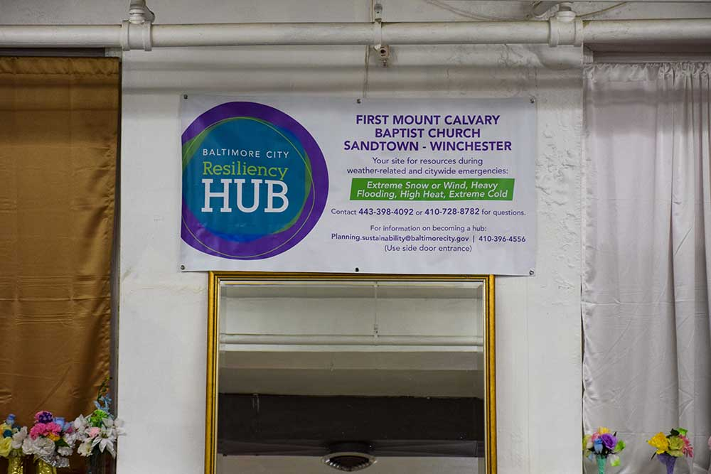

First Mount Calvary Baptist Church, located in the Sandtown-Winchester neighborhood, has been a community resource for more than 30 years. (Photo by Maya Pottiger | University of Maryland)
City government reaches out to community leaders to create ‘hub’ network that helps Baltimoreans cope with emergencies — but some say scope is too narrow
BALTIMORE — Perkins Homes, a public housing complex in Southeast Baltimore, lost power during the heat wave in July. As window air-conditioning units failed residents, neighbors turned to a nearby solar-powered community center for relief.
At POWER House, residents refrigerated their medications or charged their cell phones or came inside just to escape the heat.
“It was the hottest day in the summertime, and we was rolling,” said Colin Jones, a community leader and lifelong resident of Perkins Homes who directs the center, POWER House.
POWER House — an abandoned fire station turned community space by the Living Classrooms nonprofit — is one of seven resiliency hubs recognized by the City of Baltimore. Hubs are a result of the city’s efforts to find neighborhood partners in low- and middle-income areas to help cope with climate-related disasters.
The term “resiliency hub” is relatively new, but the basic concept, of course, is not. Community leaders have long been running trusted spaces that serve residents in a variety of ways through churches and community centers.
These spots are well known and within walking distance. The city designated these spaces as hubs and provided supplies including snow blowers, shovels, two-way radios, refrigerators and water for weather-related disasters.
Across the country, 40 communities are working on hubs. About 10 have selected sites, are working with community partners and are conducting site and solar storage assessments.
Left: A solar umbrella outside POWER House Community Center offers an outdoor charging station for the Perkins Homes neighborhood. Right: Kristin Baja, a climate resilience officer at the Urban Sustainability Directors Network, helped introduce the concept of resiliency hubs in Baltimore when she worked for the city government. (Photos by Maya Pottiger | University of Maryland)
In Miami and Puerto Rico — areas that experience regular flooding and weather-related disasters — an emphasis is put on post-disaster recovery and retrofitting buildings to cope with more frequent storms, but the hubs are not solely focused on disasters.
As wildfires in October disrupted millions of Northern California residents, the Northern California Resilience Network experienced a “big test,” Susan Silber, the network’s founder, said.
The NorCal network hub project is still in its pilot phase, but it is establishing hubs within communities by looking at preparedness, response and sustainability, in part to help manage the state’s increasing natural disasters.
“I had been working in the environmental field for several years, then began organizing my neighborhood around earthquake preparedness,” Silber said. “Then I realized there was an overlap.”
The key to resilience
Sacoby Wilson, a professor at the University of Maryland School of Public Health, thinks “people are the best resource when you think about resilience: grassroots, local, neighborhood. That trust, those relationships are going to be key to building resilience.”
The idea of resiliency hubs in Baltimore took off in 2014 when Kristin Baja worked at the city's Office of Sustainability. At the time, it was “one of the only plans in the entire country,” said Baja, a climate resilience officer at the Urban Sustainability Directors Network who authored the white paper on “resilience” hubs.
She and other members went to communities that deal with systemic racism rooted in historical policies of segregation and spoke with residents there rather than expecting them to come to meetings downtown, which she says community members described as being “incredibly intimidating” and difficult for some people to get to.
In surveying each community, they identified strong leadership at locations known often by word-of-mouth that provided everything from programs for children and support for older neighbors as well as food and snow removal.
“The best thing that we can do as city government actors is support what the community wants,” said Anne Draddy, Baltimore’s sustainability coordinator. “Not do it, not lead it. Let them lead it and say, ‘What do you need from us?’ "
In early August, for example, Aubrey Germ, climate and resilience planner at the Office of Sustainability, organized a meeting to hear from leaders from all seven resiliency hubs in Baltimore. Germ took over the hub initiative in July 2018 and wanted to create a “two-way communication street” with hub leaders to make sure they were getting the right support.
Overall, hub leaders wanted to learn how to better handle extreme heat and snow conditions, as well as floods. Through grants, Germ invited a consultant to lead a workshop in October where hub leaders came up with emergency management plans and were trained in the jargon used by emergency management officials during disasters, because that’s who the hubs will be communicating with should an emergency occur.
“They also were able to provide feedback to us as the city on ways that we can help improve the hub initiative and provide ample resources for the hubs to feel like they can serve in their role of a grassroots resiliency leader,” Germ said.
Before this workshop, hub leaders didn’t have regular meetings. But Germ plans to have two to four meetings each year.
But the hub program hasn’t gone unchallenged.
Baja worries about Baltimore’s focus on disaster preparedness but acknowledges the hub project is still in progress. Planning for weather-related disasters is essential, she said, but it is only one piece of the resiliency puzzle. From her standpoint, there is not an “actual holistically functioning site in Baltimore.”
“People are not thriving. We have such divisions in income levels, in accessibility, in lifestyles,” Baja said. “If we’re not thinking about everyday quality of life for people in general, then we’re missing out on what it means to actually be resilient.”
Wilson echoes her concerns.
“I think it's a really good idea,” Wilson said. But “resilience and building resilience shouldn't just be when it relates to disasters. It should be everyday. It sounds like the hubs right now are more reactionary, not proactive and prevention.”
When it comes to resiliency hubs, it’s not a one-size-fits-all formula. Community leaders have different concerns depending on their neighborhood’s needs, such as security and funding, and questions about capacity during potential disasters.
In the East Baltimore neighborhood of Oliver, Earl Johnson, the community association president, established an emergency team before he was approached about resiliency hubs. After weather alerts are issued, Johnson’s team cleans storm drains and advises the government which trees are likely to fall on houses.
The Office of Sustainability plans for a hub in Oliver. But Johnson, who serves on the city’s Commission on Sustainability, worries that a hub wouldn’t have the capacity to shelter enough residents in a real emergency.
“Having the trust in your communities is important,” Johnson said. “Telling them [residents] to come somewhere in a life-or-death situation and you become the death part of that situation is not something that you want to do.”
Jim Davenport, president of resiliency hub The Door, has similar concerns.
“When you look at a resiliency hub, will you be able to serve the whole community? Or will we have to make some real hard decisions, for instance, in the health area, in the case of an emergency, be it manmade or be it climate,” Davenport said.
Over in Sandtown-Winchester, Inez Robb, who also serves on the Commission on Sustainability, and Roxane Prettyman, a neighborhood leader, are another example of a trusted, community-led resiliency hub out of First Mount Calvary Baptist Church.
This banner, which highlights each location as being a resource for extreme weather, hangs in resiliency hubs around Baltimore. (Photo by Maya Pottiger | University of Maryland)
Mount Calvary has always been open to its neighbors. Prettyman would know: She grew up attending the church. She even has her phone number taped to the door on the chance someone should stop by when she or her colleagues aren’t around.
Before being designated a resiliency hub by the city, Mount Calvary already had several community programs in place with the goal of empowering its citizens.
“My thing is: I'll do with you but not for you, because doing for someone is not empowering,” Robb said. She wants her neighbors to know what to do or whom to call if she or Prettyman aren’t available.
“However, you've got to make the first step, so that way they won't feel afraid,” Robb said.
First Mount Calvary Baptist Church: The church hosts a weekly soup kitchen and Narcotics Anonymous meetings. Church leaders help find community youth summer jobs and volunteer opportunities. Children can get free haircuts, school supplies and backpacks here. Residents can register to vote, find health resources, borrow clothes for interviews, play board games, talk with neighbors and attend monthly Johns Hopkins Faith Initiative Program Lunch and Learn sessions. Several programs are devoted to older citizens, including clinics on wills and estate planning and information on snow removal. Office of Employment Development job information is always available at monthly community association meetings. The church distributes fresh produce once a month and hosts Thanksgiving dinner each November for the community and local police. Prettyman said they served at least 200 people during one dinner.
Pictured: Inez Robb, who serves on Baltimore’s Commission on Sustainability, is an active member of the Sandtown-Winchester neighborhood and helps lead the resiliency hub at First Mount Calvary Baptist Church. (Photo by Maya Pottiger | University of Maryland)
The Door, Baltimore Urban Leadership Foundation: The Door is open to the community seven days a week. It is home to the after-school and STEM program Generation E4. The CARE Community Association is sponsored by and operates out of The Door. CARE is a community-led group that works to reduce violence and increase neighborhood cleanliness through local partnerships. On Saturdays, community members can use The Door to host celebrations, like retirement parties. A pantry with food baskets helps families in need. The building has a cool roof and energy efficient lighting. Jim Davenport and Tehma Smith Wilson are looking for more ways to help neighbors, such as seeking partnerships with professionals to speak to residents about banking and finances.
Pictured: Jim Davenport, president of The Door, worries about resiliency hubs being able to serve a whole community. (Photo by Maya Pottiger | University of Maryland)
POWER House: POWER House is a Perkins Homes community center that offers weekly programs for children before and after school. High school students can earn community service hours here. Children can learn sign language and take ESOL classes. Adults can earn their GED. The center has cots, a grill, propane, water and dry food, and there are kits for first-time mothers provided by Johns Hopkins. Colin Jones, the director, lives a block away, is part of the tenant council, and is a liason for the Perkins Homes community and coordinates with neighboring areas. Once a month, the staff takes senior citizens grocery shopping. This hub is one of two that are currently energy resilient. It has up to 72 hours of solar battery power.
Pictured: Colin Jones, director of POWER House, stands in front of the three solar power batteries in the basement of the community center, which provide up to 72 hours of solar power. (Photo by Maya Pottiger | University of Maryland)
Living Classrooms operates the two solar-powered hubs in Baltimore, and the Perkins Homes location was the first hub in the country to operate out of a public housing site, according to Living Classrooms CEO James Piper Bond. Power 52 Foundation, a nonprofit solar company, worked with Living Classrooms to install solar panels on the roof.
But the remaining hubs are not yet energy resilient.
Draddy said engineers evaluated each site and the city is looking for ways to add solar power to each hub. By June 2020, she said, two more hubs will have solar and battery storage.
But there are many challenges to adding solar, whether it’s the shape or quality of the roof or finding funding for the project. There is “no way, disappointingly, that we could put solar or storage” at Mount Calvary, Draddy said.
"When they [engineers] were doing their assessments on the buildings, they were like, ‘This roof [Mount Calvary] can't handle the weight and the infrastructure of the solar,’” Germ said.
With that, Germ said it’s essential that hubs know their own capacity and understand what they’re able to handle. One of her goals with the hub initiative is to help leaders create neighborhood partnerships for when they are unable to provide on-site assistance.
During a Code Red day, for example, hubs without solar storage will need to identify community resources — like a nearby cooling center in their neighborhood — to direct people to.
“That's something that we've been emphasizing with hub leaders is that, yes, you guys can be a go-to and a resource place, but you might not be the best place for everyone to go in every scenario,” Germ said. “So identifying other partners in your neighborhood who are proximal and close by can be really valuable.”
Hubs do not receive annual funding because they are not always functioning as an emergency hub. It does not make sense to provide regular funding because hubs “might not be activated for years,” Draddy said.
Funding is “like a puzzle,” Kristin Baja said.
The hub idea is “constantly evolving and growing and looks different all the time,” Germ said.
She visits each hub to have one-on-one meetings in which she and the leaders discuss what gaps still need to be filled and how to find those solutions. And Germ considers public health “a real key component in community resiliency and climate change preparedness” as part of the city’s emergency mitigation approach, because it is more difficult for low-income populations to bounce back after disasters.
But the hubs still face different challenges, including funding.
Mount Calvary is not yet an official hub because it doesn’t have the funding to weatherproof an exterior wall that’s been damaged by rain— which poses a problem in case of an actual weather emergency.
The city does not directly pay for the repair efforts, but members of the Office of Sustainability are helping to connect the church with possible funders.
“When we do have a hub, we really consider that a very strong relationship because we've chosen them very, very carefully about who they are in the community and what they represent,” Draddy said.
Future of Hubs
Johnson thinks an emergency preparedness approach is a good starting point and really gets at the core goal of a resiliency hub: empowerment.
If the city placed a larger emphasis on education, Johnson said these skills would transfer over into different aspects of everyday life: having enough food in the house, knowing where your documents are, getting organized.
“This is stuff that people need to have in their daily lives,” Johnson said. “If they spent more time helping people prepare for emergencies, they’d be helping them prepare for daily life.”
But he has concerns if Baltimore faces a Katrina-like disaster.
“I don’t think they [the Office of Emergency Management, a resiliency hub partner] know what will happen on a community level and how community members will react to an emergency and how long they have before panic sets in,” he said. “A book can’t tell you that. I don't think they understand that people aren’t ready.”
Design by Rachel Bucchino, Capital News Service